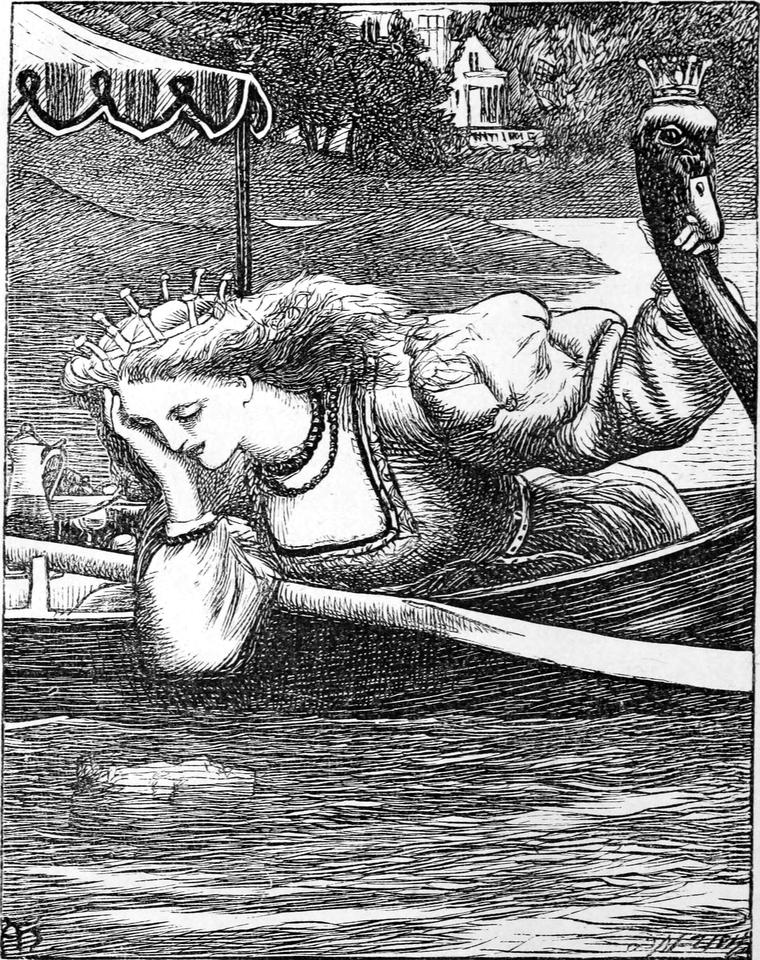

The prince went to dress for the occasion, for he was resolved to die like a prince.
When the princess heard that a man had offered to die for her, she was so transported that she jumped off the bed, feeble as she was, and danced about the room for joy. She did not care who the man was; that was nothing to her. The hole wanted stopping; and if only a man would do, why, take one. In an hour or two more everything was ready. Her maid dressed her in haste, and they carried her to the side of the lake. When she saw it she shrieked, and covered her face with her hands. They bore her across to the stone, where they had already placed a little boat for her. The water was not deep enough to float it, but they hoped it would be, before long. They laid her on cushions, placed in the boat wines and fruits and other nice things, and stretched a canopy over all.
In a few minutes the prince appeared. The princess recognized him at once, but did not think it worth while to acknowledge him.
"Here I am," said the prince. "Put me in."
"They told me it was a shoeblack," said the princess.
"So I am," said the prince. "I blacked your little boots three times a day, because they were all I could get of you. Put me in."
The courtiers did not resent his bluntness, except by saying to each other that he was taking it out in impudence.
But how was he to be put in? The golden plate contained no instructions on this point. The prince looked at the hole, and saw but one way. He put both his legs into it, sitting on the stone, and, stooping forward, covered the corner that remained open with his two hands. In this uncomfortable position he resolved to abide his fate, and turning to the people, said,—
"Now you can go."
The king had already gone home to dinner.
"Now you can go," repeated the princess after him, like a parrot.
The people obeyed her and went.
Presently a little wave flowed over the stone, and wetted one of the prince's knees. But he did not mind it much. He began to sing, and the song he sung was this:—
Darkly bright in forest dell;
As a world without the gleam
Of the downward-going stream;
As a world without the glance
Of the ocean's fair expanse;
As a world where never rain
Glittered on the sunny plain;—
Such, my heart, thy world would be,
If no love did flow in thee.
Of the rivulets underground;
Or the bubbling of the spring
Out of darkness wandering;
Or the mighty rush and flowing
Of the river's downward going;
Or the music-showers that drop
On the outspread beech's top;
Or the ocean's mighty voice,
When his lifted waves rejoice;—
Such, my soul, thy world would be,
If no love did sing in thee.
Keep the waters in thy sight.
Love hath made me strong to go,
For thy sake, to realms below,
Where the water's shine and hum
Through the darkness never come:
Let, I pray, one thought of me
Spring, a little well, in thee;
Lest thy loveless soul be found
Like a dry and thirsty ground."
"Sing again, prince. It makes it less tedious," said the princess.
But the prince was too much overcome to sing any more, and a long pause followed.
"This is very kind of you, prince," said the princess at last, quite coolly, as she lay in the boat with her eyes shut.
"I am sorry I can't return the compliment," thought the prince; "but you are worth dying for, after all."
Again a wavelet, and another, and another flowed over the stone, and wetted both the prince's knees; but he did not speak or move. Two—three—four hours passed in this way, the princess apparently asleep, and the prince very patient. But he was much disappointed in his position, for he had none of the consolation he had hoped for.
At last he could bear it no longer.
"Princess!" said he.
But at the moment up started the princess, crying,—
"I'm afloat! I'm afloat!"
And the little boat bumped against the stone.

"Princess!" repeated the prince, encouraged by seeing her wide awake and looking eagerly at the water.
"Well?" said she, without looking round.
"Your papa promised that you should look at me, and you haven't looked at me once."
"Did he? Then I suppose I must. But I am so sleepy!"
"Sleep then, darling, and don't mind me," said the poor prince.
"Really, you are very good," replied the princess. "I think I will go to sleep again."
"Just give me a glass of wine and a biscuit first," said the prince, very humbly.
"With all my heart," said the princess, and gaped as she said it.
She got the wine and the biscuit, however, and leaning over the side of the boat towards him, was compelled to look at him.
"Why, prince," she said, "you don't look well! Are you sure you don't mind it?"
"Not a bit," answered he, feeling very faint in deed. "Only I shall die before it is of any use to you, unless I have something to eat."
"There, then," said she, holding out the wine to him.
"Ah! you must feed me. I dare not move my hands. The water would run away directly."
"Good gracious!" said the princess; and she began at once to feed him with bits of biscuit and sips of wine.
As she fed him, he contrived to kiss the tips of her fingers now and then. She did not seem to mind it, one way or the other. But the prince felt better.
"Now for your own sake, princess," said he, "I cannot let you go to sleep. You must sit and look at me, else I shall not be able to keep up."
"Well, I will do anything I can to oblige you," answered she, with condescension; and, sitting down, she did look at him, and kept looking at him with wonderful steadiness, considering all things.
The sun went down, and the moon rose, and, gush after gush, the waters were rising up the prince's body. They were up to his waist now.
"Why can't we go and have a swim?" said the princess. "There seems to be water enough just about here."
"I shall never swim more," said the prince.
"Oh, I forgot," said the princess, and was silent.
So the water grew and grew, and rose up and up on the prince. And the princess sat and looked at him. She fed him now and then. The night wore on. The waters rose and rose. The moon rose likewise higher and higher, and shone full on the face of the dying prince. The water was up to his neck.
"Will you kiss me, princess?" said he, feebly. The nonchalance was all gone now.
"Yes, I will," answered the princess, and kissed him with a long, sweet, cold kiss.
"Now," said he, with a sigh of content, "I die happy."
He did not speak again. The princess gave him some wine for the last time: he was past eating. Then she sat down again, and looked at him. The water rose and rose. It touched his chin. It touched his lower lip. It touched between his lips. He shut them hard to keep it out. The princess began to feel strange. It touched his upper lip. He breathed through his nostrils. The princess looked wild. It covered his nostrils. Her eyes looked scared, and shone strange in the moonlight. His head fell back; the water closed over it, and the bubbles of his last breath bubbled up through the water. The princess gave a shriek, and sprang into the lake.
She laid hold first of one leg, and then of the other, and pulled and tugged, but she could not move either. She stopped to take breath, and that made her think that he could not get any breath. She was frantic. She got hold of him, and held his head above the water, which was possible now his hands were no longer on the hole. But it was of no use, for he was past breathing.
Love and water brought back all her strength. She got under the water, and pulled and pulled with her whole might, till at last she got one leg out. The other easily followed. How she got him into the boat she never could tell; but when she did, she fainted away. Coming to herself, she seized the oars, kept herself steady as best she could, and rowed and rowed, though she had never rowed before. Round rocks, and over shallows, and through mud she rowed, till she got to the landing-stairs of the palace. By this time her people were on the shore, for they had heard her shriek. She made them carry the prince to her own room, and lay him in her bed, and light a fire, and send for the doctors.
"But the lake, your highness!" said the chamberlain, who, roused by the noise, came in, in his nightcap.
"Go and drown yourself in it!" she said.
This was the last rudeness of which the princess was ever guilty; and one must allow that she had good cause to feel provoked with the lord chamberlain.
Had it been the king himself, he would have fared no better. But both he and the queen were fast asleep. And the chamberlain went back to his bed. Somehow, the doctors never came. So the princess and her old nurse were left with the prince. But the old nurse was a wise woman, and knew what to do.
They tried everything for a long time without success. The princess was nearly distracted between hope and fear, but she tried on and on, one thing after another, and everything over and over again.
At last, when they had all but given it up, just as the sun rose, the prince opened his eyes.